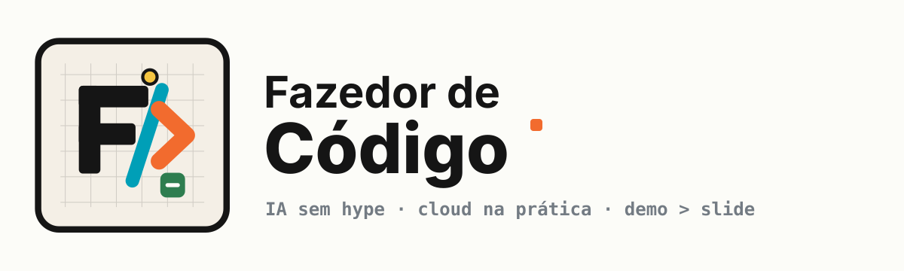
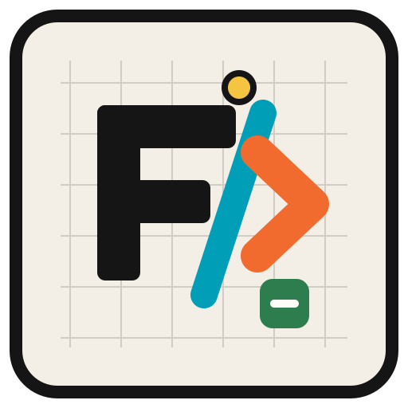
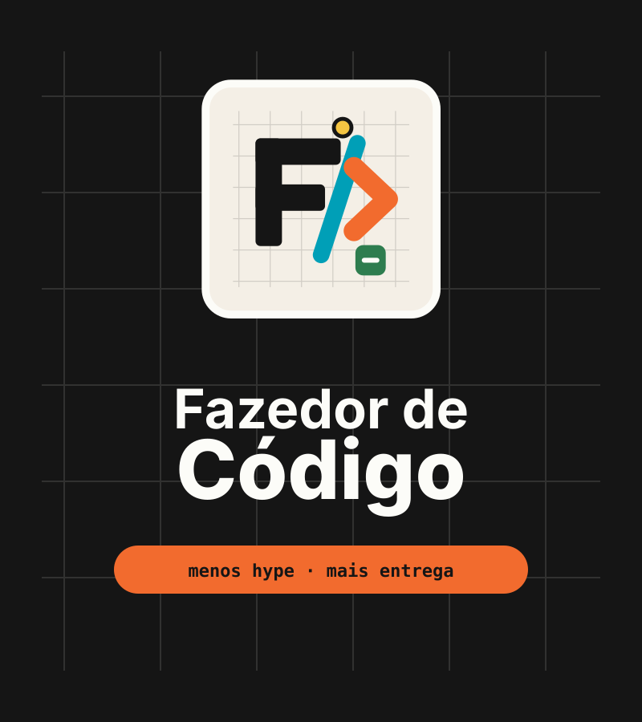
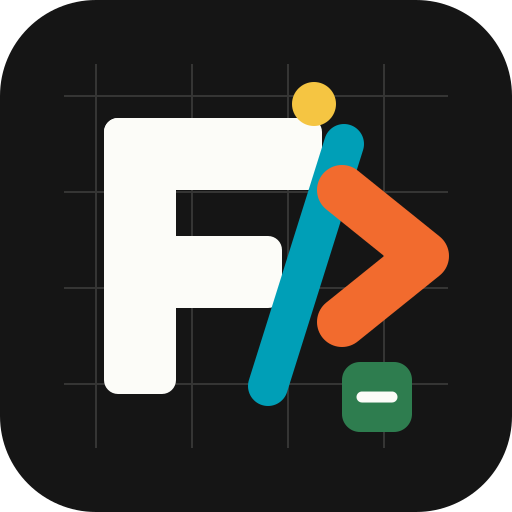
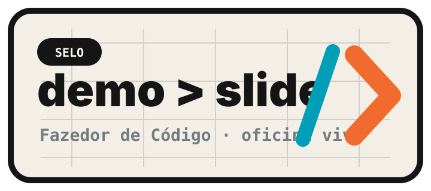
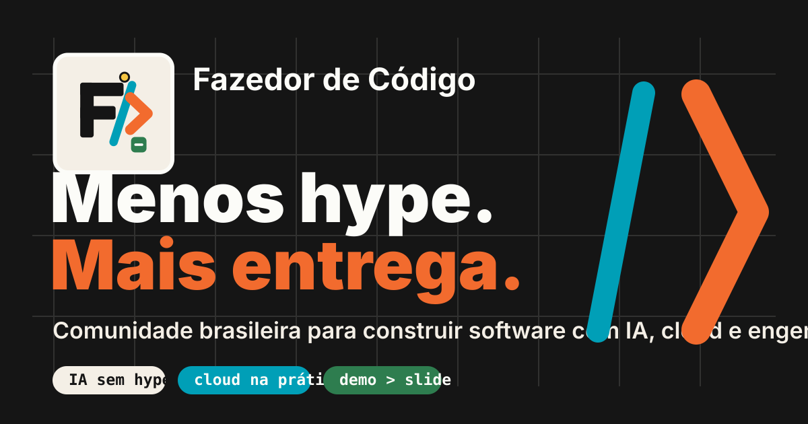

logo-horizontal.svg · site, deck, header
Oficina Viva · identidade v1
Uma comunidade brasileira para construir software de verdade com IA, cloud e engenharia prática.


logo-horizontal.svg · site, deck, header

logo-stacked.svg · capas, posters, slides

avatar.svg · redes sociais

badge-demo-slide.svg · selo de evento
#151515#F4EFE6#F26B2E#009FB7#2E7D4F#F5C542#737B83#FCFCF8oficina · ao vivo
Uma sessão prática para transformar uma ideia em especificação, código revisado e deploy.
$ fazedor entrar
Software se aprende fazendo: código, IA, cloud, arquitetura, produto e carreira para quem quer tirar ideias do slide.

social-card.svg · card base para Open Graph e posts